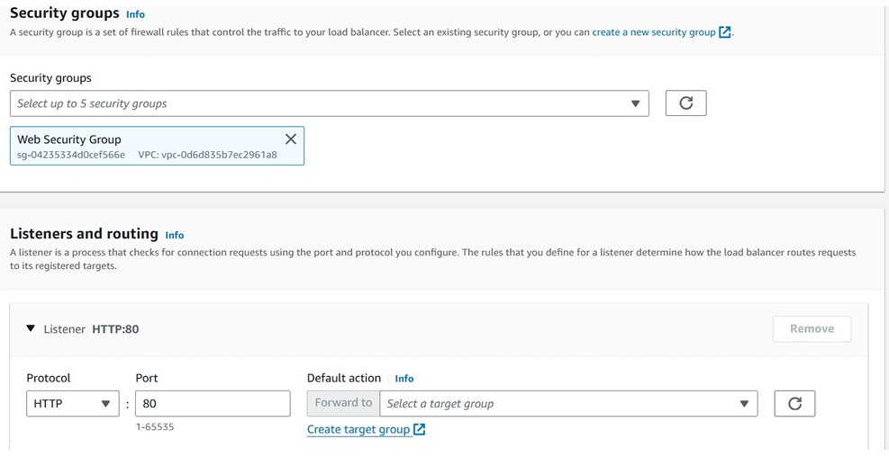

Elastic Load Balancing (ELB) and Amazon EC2 Auto Scaling to load balance
and automatically scale your AWS infrastructure.
ELB automatically distributes incoming application traffic across multiple
Amazon Elastic Compute Cloud (Amazon EC2) instances. ELB provides the
amount of load balancing capacity needed to route application traffic to
help you achieve fault tolerance in your applications.
Auto Scaling help to maintain application availability and give you the
ability to scale your Amazon EC2 capacity out or in automatically
according to conditions that you define. You can use auto scaling to help
ensure that you are running your desired number of EC2 instances. Auto
scaling can also automatically increase the number of EC2 instances during
spikes in demand to maintain performance and can decrease capacity during
lulls to reduce costs. Auto scaling is well suited to applications that
have stable demand patterns or that experience hourly, daily, or weekly
variability in usage.
In this task, you create an AMI from the existing Web Server 1. This action saves the contents of the boot disk so that new instances can be launched with identical content. On the AWS Management Console, in the Search bar, enter and choose EC2 to open the Amazon EC2 Management Console.
In the left navigation pane, locate the Instances section, and choose Instances.
The Test webserver instance is listed. You now create an AMI based on this instance. Choose the Test webserver instance, which should appear in a Running state. From the Actions dropdown list, choose Image and templates > Create image,
and then configure the following options: For Image name, enter Web Server AMI. For Image description - optional, enter Test AMI for Web Server . Choose Create image
The confirmation screen displays the AMI ID for your new AMI. You use this AMI when launching the Auto Scaling group later in the lab.

In this task, you create a load balancer that can balance traffic across multiple EC2 instances and Availability Zones. In the left navigation pane, locate the Load Balancing section, and choose Load Balancers.
Choose create load balancer. In the Load balancer types section, for Application Load Balancer, choose Create.
On the Create Application Load Balancer page, in the Basic configuration section, configure the following option: For the Load balancer name, enter LabELB. Scheme default setting i.e. internet facing, IP address type: IPV4.
In the Network mapping section, configure the following options: For VPC, choose Lab VPC. For Mappings, choose both Availability Zones listed. For the first Availability Zone, choose Public Subnet 1. For the second Availability Zone, choose Public Subnet 2.
These options configure the load balancer to operate across multiple Availability Zones. In the Security groups section, choose the X for the default security group to remove it. From the Security groups dropdown list, choose Web Security Group. The Web Security Group has already been created for you, which permits HTTP access. In the Listeners and routing section, choose the Create target group link.
Note: This link opens a new browser tab with the Create target group configuration options. On the new Target groups browser tab, in the Basic configuration section, configure the following: For Choose a target type, choose Instances. For Target group name, enter lab-target-group . At the bottom of the page, choose Next.
On the Register targets page, choose Create target group. Once the target group has been created successfully, close the Target groups browser tab.
Return to the Load balancers browser tab. In the Listeners and routing section, choose Refresh to the right of the Forward to dropdown list for Default action. From the Forward to dropdown list, choose lab-target-group.
At the bottom of the page, choose Create load balancer. You should receive a message similar to the following: Successfully created load balancer: LabELB . To view the LabELB load balancer that you created, choose View load balancer.
In this task, you create a launch template for your Auto Scaling group. A
launch template is a template that an Auto Scaling group uses to launch
EC2 instances. When you create a launch template, you specify information
for the instances, such as the AMI, instance type, key pair, security
group, and disks.
At the top of the AWS Management Console, in the search bar, enter and
choose EC2. In the left navigation pane, locate the Instances section, and
choose Launch Templates. Choose Create launch template.
On the Create launch template page, in the Launch template name and description section, configure the following options: For Launch template name - required, enter lab-app-launch-template. For Template version description, enter A web server for the load test app. For Auto Scaling guidance, choose Provide guidance to help me set up a template that I can use with EC2 Auto Scaling.
In the Application and OS Images (Amazon Machine Image) - required section, choose the My AMIs tab. Notice that Web Server AMI is already chosen.
In the Instance type section, choose the Instance type dropdown list, and choose t3.micro. In the Key pair (login) section, confirm that the Key pair name dropdown list is set to Don't include in launch template if you do not need to connect to instances or choose a key pair if you need to connect to an instance.
In the Network settings section, choose the Security groups dropdown list, and choose Web Security Group. When you launch an instance, you can pass user data to the instance.
Choose Create launch template. You should receive a message similar to the following: Successfully created lab-app-launch-template.
Choose View launch templates.
In this task, you use your launch template to create an Auto Scaling group. Choose lab-app-launch-template.
From the Action dropdown list, choose Create Auto Scaling group
On the Choose launch template or configuration page, in the Name section, for Auto Scaling group name, enter Lab Auto Scaling Group. Choose Next. On the Choose instance launch options page, in the Network section, configure the following options: From the VPC dropdown list, choose Lab VPC. br From the Availability Zones and subnets dropdown list, choose Private Subnet 1 (10.0.1.0/24) and Private Subnet 2 (10.0.3.0/24). Choose Next.
On the Configure advanced options – optional page, configure the following options: In the Load balancing – optional section, choose Attach to an existing load balancer. In the Attach to an existing load balancer section, configure the following options: Choose Choose from your load balancer target groups. From the Existing load balancer target groups dropdown list, choose lab-target-group | HTTP.
In the Health checks – optional section, for Health check type, choose ELB. Choose Next
On the Configure group size and scaling policies – optional page, configure the following options: In the Group size – optional section, enter the following values: Desired capacity:2 , Minimum capacity: 2 , Maximum capacity: 4.
In the Scaling policies – optional section, configure the following options: Choose Target tracking scaling policy. For Metric type, choose Average CPU utilization. Change the Target value to 50 . This change tells Auto Scaling to maintain an average CPU utilization across all instances of 50 percent. Auto Scaling automatically adds or removes capacity. as required to keep the metric at or close to the specified target value. It adjusts to fluctuations in the metric due to a fluctuating load pattern.
Choose Next. On the Add notifications – optional page, choose Next. On the Add tags – optional page, choose Add tag and configure the following options: Key: Enter Name . Value - optional: Enter Lab Instance . Choose Next. Choose Create Auto Scaling group. These options launch EC2 instances in private subnets across both Availability Zones.
Your Auto Scaling group initially shows an Instances count of zero, but new instances will be launched to reach the desired count of two instances.
In this task, you terminate the Test Server instance. This instance was used to create the AMI that your Auto Scaling group used, but this instance is no longer needed. Choose Test Server , and ensure that it is the only instance selected. From the Instance state dropdown menu, choose Terminate instance. Choose Terminate.